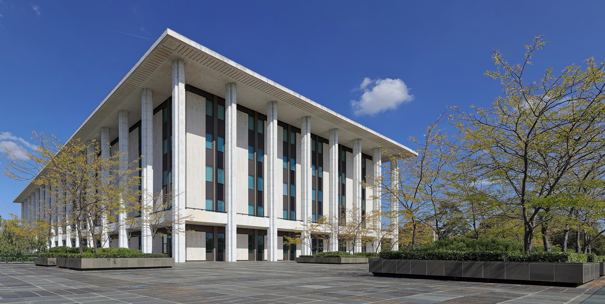
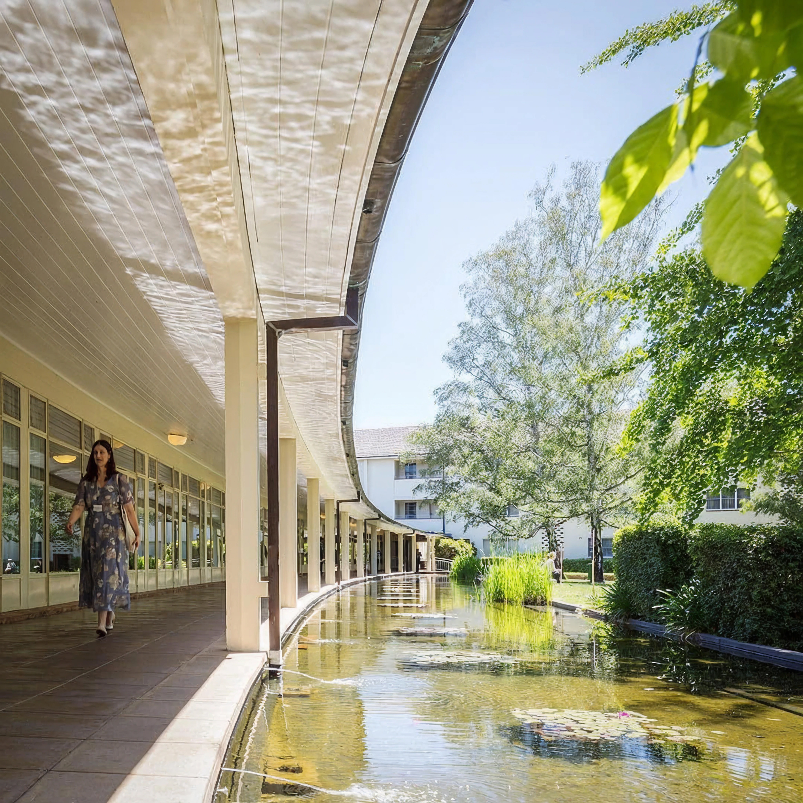
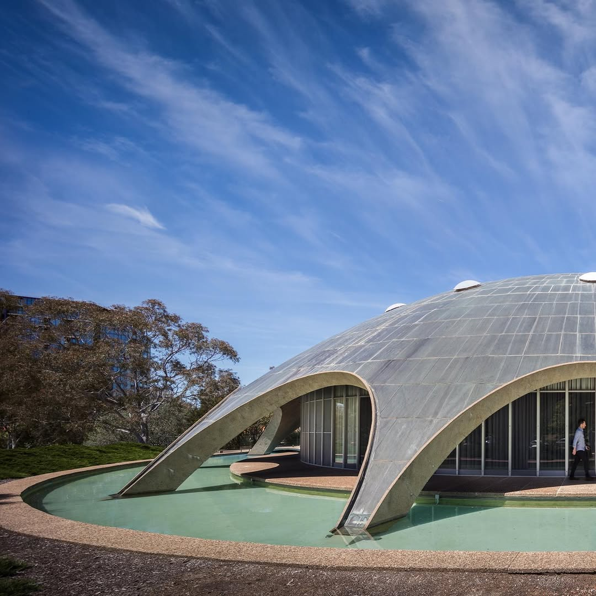

N. 20
National Library of Australia

National Library of Australia
N. 19
Churchill House
AT RISK

Churchill House
N. 18
University House

University House
N. 17
Callam Offices
AT RISK

Callam Offices
N. 16
The Shine Dome

The Shine Dome
N. 15
Australian War Memorial

Australian War Memorial